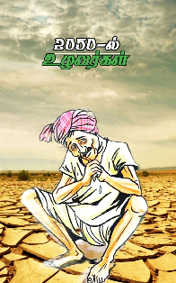

|  |
|---|
ஆத்விக் என்னும் மூன்று வயது சின்னப்பையன் தன்னிடம் உள்ள பொம்மையை எடுத்துக்கொண்டு அதனிடம் பேசினான். அவன் அந்த பொம்மைக்கு இட்ட பெயர் ஹேரி. ஹேரி நான் உன்னிடம் ஒரு ரகசியம் சொல்லணும் என்று அந்த பொம்மையின் காது அருகில் மெல்லிய குரலில் சொன்னான். பொம்மை அவனையே உற்றுப் பார்ப்பது போல் இருந்தது. ஆனால் அந்த பொம்மைக்குதான் எந்த ஒரு உணர்ச்சியும் கிடையாதே, அதனால் அது பேசாமலே இருந்தது. அதை அறியாமல் ஆத்விக் அந்த பொம்மையிடன் என்னன்னு கேட்க மாட்டியா என்று கோபக்குரலில் கேட்டான். அதற்கும் அது எந்த பதிலும் சொல்லவில்லை ஏனெனில் அது ஒரு பொம்மையாயிற்றே. ஆத்விக் அதைப்பார்த்து கத்திக் கொண்டும் , ஏதேதொ சொல்லி திட்டிக்கொண்டும் இருந்தான். அதை கவனித்த ஆத்விக்கின் அம்மா சிரித்துக்கொண்டே பொம்மையெல்லாம் பேசாதுடா தங்கம் என்று கூறிவிட்டு. அவன் கன்னத்தில் பாசமாக முத்தம் ஒன்றை கொடுத்தாள். அதைக்கேட்ட ஆத்விக் ஆனால், ஹேரி அவன் நண்பர்களிடம் பேசினானே. அம்மா காலையில் நான் பார்த்தேன் என்றான். அதற்கு அவனுடைய அம்மா சிரித்துக்கொண்டு அது டிவில மட்டும்தான் பேசும்பா. அதுவும் பொம்மை பேசல வேற ஒருத்தங்கதான் குரல்கொடுத்தாங்க என்றாள். ஆத்விக்குடைய அம்மா பேசுவது அவனுக்கு ஒன்னும் புரியவில்லை. ஆனால் அவனுக்கு புரிந்தது என்னவென்றால் பொம்மைகள் எல்லாம் டிவில மட்டும்தான் பேசும் என்று புரிந்துக்கொண்டான். அதைப்பற்றி அவன் தன் அம்மாவிடம் கேட்டான். அதற்கு அவனுடைய அம்மா, ஆமாம் தங்கம் ஆனால் நீ என்ன பேசினாலும் அதற்கு கேட்கும் என்றாள். அதைக்கேட்டவுடன் ஆத்விக்கு ஒரு மகிழ்ச்சி, ஏனெனில் அவன் பேசினால் பொம்மைக்கு கேட்கும் என்று அவனுடைய அம்மா கூறிவிட்டாள். அவனுடைய அம்மா சும்மா விளையாட்டுக்கு கூறியதை இவன் நம்பி விட்டான். அந்த நேரத்திலிருந்து ஆத்விக் தன் பொம்மையை கோபித்துக்கொள்ளாமல் நன்றாக விளையாடியும் , பேசிக்கொண்டும் இருந்தான். உடனே அவனுடைய அம்மா சரி நீ விளையாடிக்கொண்டிரு நான் வருகிறேன் என்று எழுந்து போனாள். ஆத்விக் தன்னுடைய அம்மா போகும் வரை பார்த்துவிட்டு அவனுடைய அறையை விட்டு வெளியே போனவுடன் மீண்டும் மெல்லியக்குரலில் பேசினான். என்னவென்றால் அந்த பொம்மைக்கு அவன் ஒரு ரகசிய பொருளை காட்டுவதாக கூறிவிட்டு அவன் இருக்குமறையிலுள்ளசுவற்றில் ஒரு கதவு இருந்தது. அதில் நிறைய விளையாட்டுப்பொருட்கள் இருந்தது. அந்த விளையாட்டுப்பொருட்களில் ஒரு சிறிய டப்பாவை எடுத்துக்கொண்டு வந்தான். தன் பொம்மையின் அருகில் அமர்ந்துக்கொண்டு தன்னிடம் உள்ள டப்பாவை திறந்துக்காட்டினான். அதில் அரிசி பருக்கை ஒன்று பதப்படுத்தப்பட்டு இருந்தது. ஆத்விக் அதை தன் பொம்மையிடம் காண்பித்து இதற்கு பெயர் அரிசி இதனை பயன்படுத்திதான் நம்ம அப்பா,அம்மா சின்ன வயசுல சாப்பிட்டாங்களாம் ஆனால் இது இப்ப எங்கேயும் கிடைக்கிறது இல்லை அழிஞ்சுப்போச்சாம் ஏன் என்றும் எனக்குத்தெரியவில்லை என்றான். அப்பொழுது வீட்டின் வெளியே ஒரு குரல் கேட்டது, என்னவென்றால் ஐயா,தாயே தருமம் பண்ணுங்க ரொம்ப பசிக்குது என்ற குரல். அதைக்கேட்டவுடன் ஆத்விக்கின் தந்தை நாங்களே சாப்பாடுக்கு திண்டாடுறோம் நீங்க வேறு இடத்தை காலி பண்ணுங்க என்று கடுமையாக கத்தினார். அதற்கு அந்த பிச்சைக்காரர் எனக்கு ரொம்ப பசிக்குது என்றுதானே கேட்டேன் ஏன்யா இப்படி கடுமையாக பேசுகிறீர்கள் என்று அழுதுக்கொண்டேகேட்டார். சரி கொஞ்சம் தண்ணீராச்சும் கொடுங்கள் என்றார். அதைக்கேட்டவுடன் ஆத்விக்கின் அப்பா தண்ணீரும் இல்லை ஒன்றுமில்லை இந்த இடத்தைவிட்டு போங்கய்யா என்றுகோபத்தோடுக்கூறி கதவை இழுத்து மூடினார். அந்தப் பிச்சைக்காரர் அழுதுக்கொண்டே வீட்டை விட்டு வெளியேறினார். அவரைப்பார்த்தவுடன் இன்னொரு பிச்சைக்காரர், என்னப்பா கருப்பையா ஏதாச்சும் சாப்பிடக்கிடைச்சுதா என்று வருந்தியமுகத்தோடும் சோர்ந்துக்கொண்டும் வினவினார். அதைக்கேட்ட அந்த கருப்பையா எதுவும் கிடைக்கவில்லையேப்பா என்று அழுதுக்கொண்டேக்கூறினார். இருவரும் கொஞ்சதூரம் நடந்து விட்டு மிகவும் சோர்வு அடைந்தவுடன் ஒரு கடையின் வெளியில் அமர்ந்தனர். அப்பொழுது சாலையில் ஒரு மரமும் இல்லை வெயில் நெருப்பு கனல் போல் பத்தி எரிந்துக்கொண்டிருந்தது. இருவரும் வெறும் காலில் நடந்ததால் இருவருடைய கால்களும் பொத்துக்கொண்டது இருவரும் வாயினால் தன் கால்களை உஃவ் உஃவ்..... என்று ஊதிக்கொண்டனர். சிறிது நேரத்தில் இருவரும் அமர்ந்திருந்த கடையிலிருந்து இருவர் வெளியே வந்தனர். அவர்கள் புலம்பிக்கொண்டே இருந்தனர். என்னவென்றால் நாம் வாங்கியது ஒரே ஒரு தண்ணீர் பாட்டிலும். பீட்ஸாவும்தான் அதுவே 50 ஆயிரம் ரூபாய் ஆகிவிட்டது என்று புலம்பிக்கொண்டே இருந்தனர். புலம்பி விட்டு தன்னிடம் உள்ள பில்லை தூக்கி எறிந்தனர். அந்த பில் கருப்பையாவின் மடியில் விழுந்தது. உடனே கருப்பையா தன் அருகில் அமர்ந்தவரை பார்த்து ஏப்பா மாரியப்பா நம்ம முன்னாடியெல்லாம் விவசாயம் செய்துக்கொண்டு நன்றாகதானே இருந்தோம். எப்போ மரத்தையும் நிலத்தையும் அழித்தார்களோ அப்போதே மழையில்லாமல் போனது மழைவராமல் விவசாயம் பண்ணமுடியாததால் அனைத்து விவசாயிகளும் தங்களுடைய நிலத்தை எல்லாம் தனியார்நிறுவனத்திடம் விற்றார்கள். நாமும் விற்றோம்.. நம் நிலத்தில் அவர்கள் தொழிற்சாலைகளைக்கட்டி காற்றையும் மாசுசெய்தனர் மற்றும் நிலத்தையும் மாசுசெய்தனர். பிறகு மூச்சு விட ஆக்சிஜன் கூட ரொம்ப குறைந்துவிட்டது வெப்பமும் ஏறிவிட்டது. அதனால் தண்ணீரும் இல்லை. முன்னாடி எல்லாம் மண்ணை சிறிது தோண்டினால் கூட தண்ணீர் குபுகுபு என்று வெளியே வரும், ஆனால் இப்போ தண்ணீரை கண்ணில் பார்ப்பதே அரிதாயிருக்கிறது என்றார். எங்கிருந்தோ கொண்டு வந்த தண்ணீரை பாட்டிலில் விக்கிறார்கள் அதுவும் கொள்ளைவிலையில். ஒரு சிறிய பாட்டில் தண்ணீரின் விவை 1000ரூபாய். அதை குடித்தது போலவே இருக்காது. தண்ணீருடைய தன்மையே மாறிவிட்டது என்று கூறி கதறி அழத்துவங்கினார். ஏற்கனவே அவர் சோர்ந்துபோயும் பசிமயக்கத்தில் இருந்தார். இப்போது கதறி அழுததால் கருப்பையா மயங்கி விழுந்தார். அதை பார்த்த மாரியப்பன் பதறி எழுந்து கடைக்குள் சென்று தண்ணீரை கேட்டார். அங்குள்ள கடைக்காரர்கள் மாரியப்பனை அடித்து துரத்தினார்கள். பிறகு வெளியே விரைவாக வந்து அந்த கடையிலிருந்து வெளியே வந்த இருவரை தேடிப்பார்த்தார். மாரியப்பன் முன் சென்ற அந்த இரண்டு பேர் ரோட்டில் புலம்பிக்கொண்டே சிறிது தொலைவில் போய்க்கொண்டிருந்தனர். மாரியப்பன் விரைந்து ஓடிச்சென்று அவர்கள் இருவர் அருகில் சென்று கொஞ்சம் தண்ணீர் கொடுங்கள் என்று காலில் விழுந்துக்கதறினார். அவர்களிடம் உள்ள பாட்டிலில் தண்ணீர் தீர்ந்துவிட்டது அவர்களிடம் பணமும் இல்லை என்றுச்சொல்லிவிட்டு மாரியப்பனை தள்ளி விட்டு முன்னேறிப்போனார்கள். மாரியப்பன் மீண்டும் கருப்பையாவிடம் போய் முன்பெல்லாம் விவசாயி விவசாயம் பண்ண முடியாமல் கடன் என்றுத்தற்கொலை செய்து கொண்டார்கள். ஆனால் இப்போது எதுவும் இல்லாமல் பசியில் சாவுகிறார்களே என்று கூறி ஆண்டவா... என்று கத்தினார். மாரியப்பனும் பசியினால் மயங்கிவிழுந்து இறந்தார். இருவரும் அவர்கள் உட்கார்ந்த இடத்திலேயே இறந்துகிடந்தார்கள். அவர்களுக்கு இறுதி சடங்கு செய்யக்கூட ஆட்கள் இல்லை. ஆனால் இறுதி சடங்கு செய்வதற்கு இடமும் இல்லை அதனால் அவர்களை குப்பையை தூக்கிப்போடுவது போல் தூக்கிஎறிந்தனர். அங்கு பார்த்தால் நிறைய மக்களை அப்படியே தூக்கிப்போட்டிருந்தார்கள். வீடு கட்ட இடம் இல்லாமல் எல்லோரும் மயாணத்திலும் வீடு கட்டிருந்தார்கள். சொர்க்க பூமி அன்று மயான பூமியாக மாறியது. பிணம்தின்னிக்கழுகுகள் நிறைய வட்டம் போட்டு கிடந்தது. இன்றைய சூழலில் நாம் மரத்தையும், காற்றையும் ,தண்ணீரையும் அழித்தால் கதையில் நடந்தது நம் நிஜவாழ்வில் நடக்கும்.
நன்றி
எழுத்தாகம்
சி.கிரிதரன்